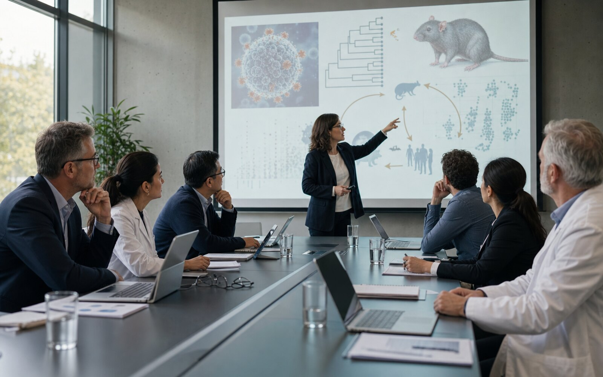
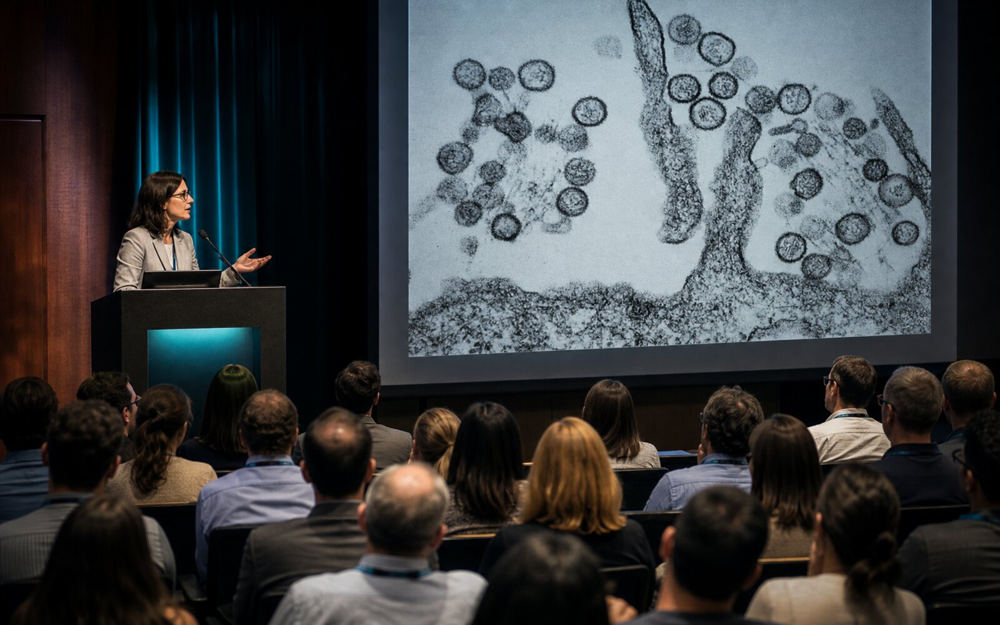
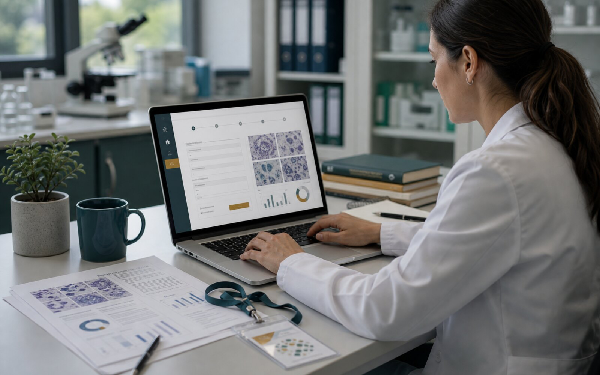
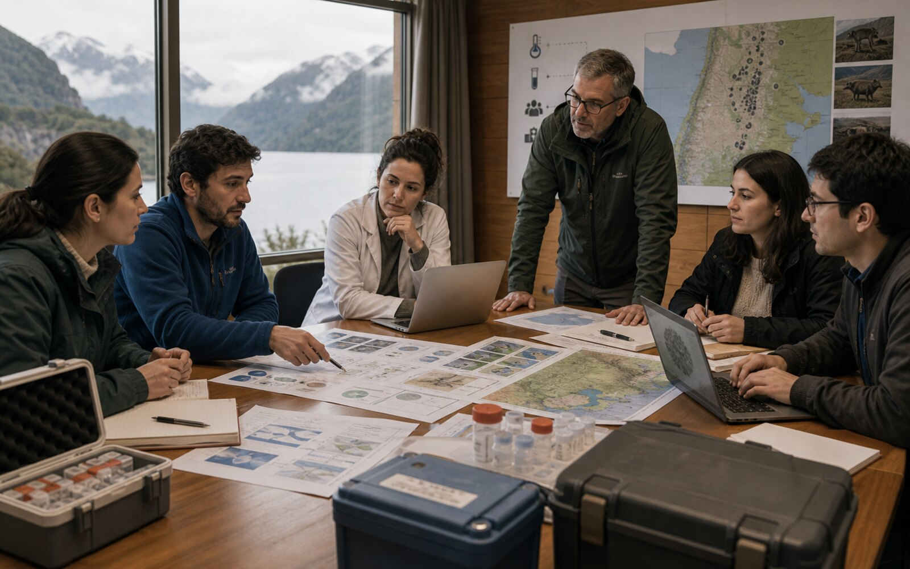

01
Scientific Program
Sessions span viral epidemiology, ecology, virus-host interaction, pathogenesis, clinical aspects, vaccines and therapeutics.
View programme
International Conference on Hantaviruses
November 2-5 2026
Venue & Location
The 2026 meeting of the International Society for Hantaviruses will take place in Puerto Varas, located in the scenic Lake District in Southern Chile widely regarded as a gateway to Patagonia. The city sits at the foot of the iconic Osorno Volcano in southern Chile, providing a spectacular natural setting for scientific exchange and collaboration.
The conference will bring together scientists and health professionals from around the world to share and discuss the latest advances across a broad range of topics, including viral epidemiology, ecology, virus-host interactions, pathogenesis, clinical aspects of disease, and the development of vaccines and therapeutics.

Conference path
Scientific Program & Keynote Speakers
The International Conference on Hantaviruses will provide an excellent platform for students, postdoctoral researchers, and established scientists to present their latest findings and engage with the international hantavirus research community. In addition, the organizing committee has invited leading experts in the field to deliver keynote lectures highlighting cutting-edge developments in hantavirus research.

Sessions span viral epidemiology, ecology, virus-host interaction, pathogenesis, clinical aspects, vaccines and therapeutics.
View programme
Invited experts highlight current developments across hantavirus research, clinical science and medical countermeasures.
See speakers
Submission and registration are handled through the conference form, with early registration timing listed on the registration page.
Registration details
A focused day on regional evidence, clinical care, early diagnosis and public health response.
Workshop detailsSpecialized Workshop: Andes Virus
In addition to the traditional ICH scientific program, the conference will feature on November 5 a one-day workshop dedicated to Andes virus, a pathogen of particular regional importance. This workshop will provide an opportunity for researchers, clinicians, and public health professionals to discuss the local epidemiology, clinical management, and public health response to hantavirus cardiopulmonary syndrome.
Local authorities and decision-makers will also be invited to participate, fostering dialogue between the scientific community and public health stakeholders.
Workshop programmeOrganizing Committees
International scientific direction for the conference programme.


Scientific Committee
National Institute of Infectious Diseases / Japan Institute for Health SecurityJapan

Scientific Committee
UK Health Security Agency / London School of Hygiene & Tropical MedicineUK


Chilean host institutions coordinating the Puerto Varas meeting.